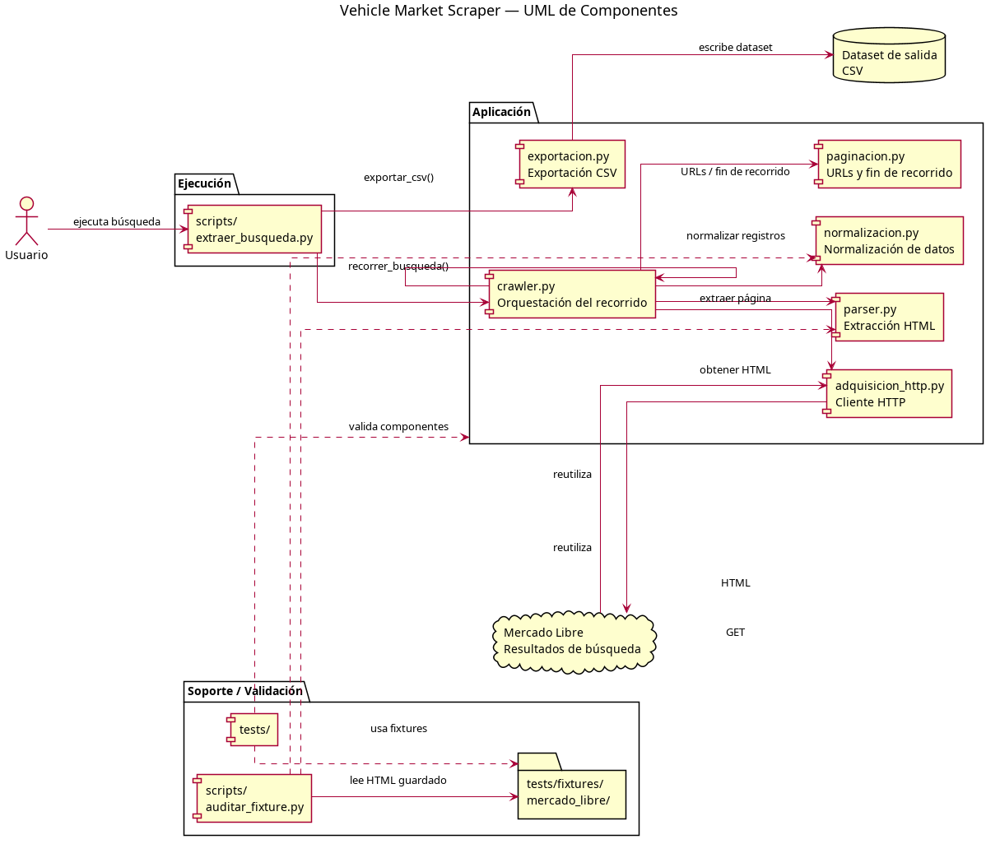
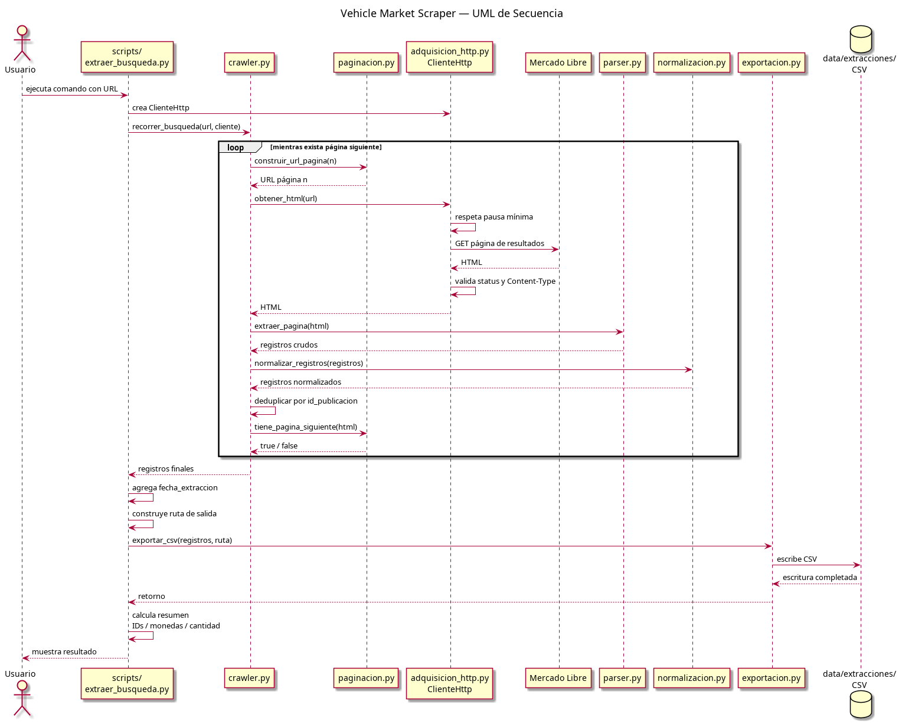

O desafio
Uma concessionária precisava analisar o mercado de veículos usados, mas a extração manual de anúncios do Mercado Livre era inviável devido ao volume e à paginação dinâmica. O objetivo era construir um scraper horizontal que capturasse os cartões de resultados em massa, normalizasse os dados (preços, anos, quilometragem) e evitasse duplicatas sem entrar em cada anúncio individual.
Abordagem e contribuição
Projetei o sistema como um fluxo de processamento em etapas com responsabilidades separadas: 1. Aquisição HTTP: Sessão persistente, cookies e detecção de bloqueios (403/429). 2. Paginação: Cálculo automático das URLs das páginas seguintes. 3. Crawler: Orquestrador da navegação que gerencia o limite de páginas e a deduplicação por meio de identificadores únicos (IDs). 4. Parser: Interpretação do HTML dos cartões. 5. Normalização: Conversão de textos (ex: '130.000 Km') em valores numéricos prontos para análise. 6. Exportação: Geração do dataset em CSV. A validação inicial do MVP foi realizada em uma busca de Volkswagen Up! 2018, obtendo 106 registros com 0 duplicatas.
Competências demonstradas
O projeto demonstra capacidade de projetar arquiteturas de software sustentáveis (separando aquisição, parsing e exportação), aplicar técnicas robustas de Web Scraping contra bloqueios e desenvolver testes automatizados com fixtures HTML para garantir a reprodutibilidade da análise sem depender do site ao vivo.
Evidências e escopo
O MVP está funcional e validado localmente. Foi implementada uma abordagem de scraping horizontal (apenas páginas de resultados) para minimizar a carga na plataforma. O scraping vertical (entrar em cada anúncio) está fora do escopo atual. O código inclui testes e documentação técnica da arquitetura.

